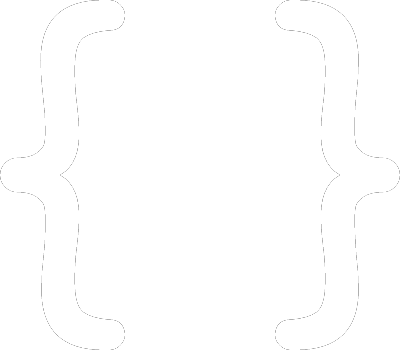
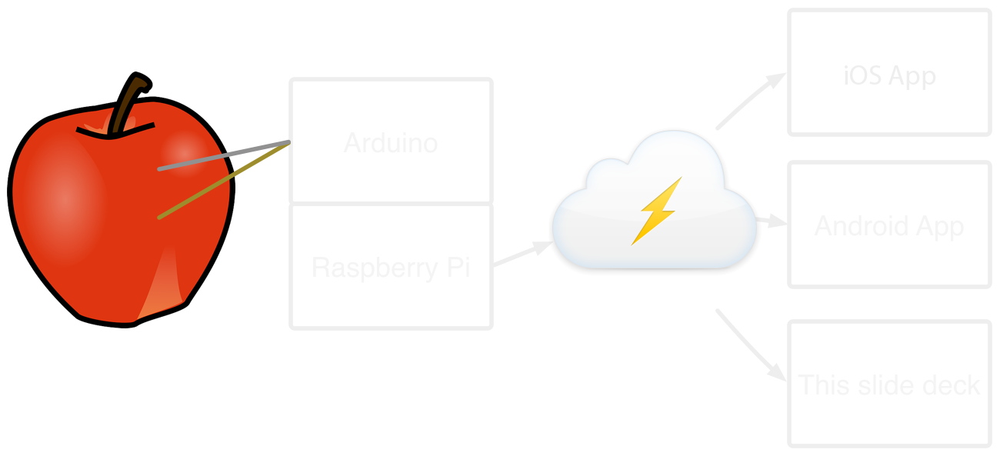

Synchronizing State
in a Multi-Device World
Created by Jenny Tong / mimming.com
Hi! I'm Jenny.
I'm a Developer Advocate at 
I like to help people cause trouble with code.
Many devices
Great Apps
Code and data

Great Apps
Much data
- Preferences and settings
- User created media
- Recorded sensor data
- Real time state
Many possible solutions
- Point to point
- Roll your own backend
- Android Backup Service
- Cloud API
Point to point
- Super fast
- No Internet dependency
- Support matrix from sad land
Roll your own backend
- Great if you already have it
- As configurable as the code you write
- You're going to be writing a lot of code
Android Backup Service
- Built in to Android
- Easy to set up and use
- Only designed for rare restores
- 1MB recommended limit
- Not gonna work on iOS or web
Cloud APIs
like Firebase
- Platform agnostic
- Easy to set up and use
- Handles lots of data
- Realtime updates everywhere
Realtime Fruit Detector
Demo
Your fruit is an
None
Realtime Fruit Detector
How it works
Realtime Fruit Detector
Device Code
//JavaScript
var five = require("johnny-five");
var Firebase = require("firebase");
var board = new five.Board();
// Connect to Firebase
var myFirebaseRef =
new Firebase("https://fruit.firebaseio.com/fruitdetector");
board.on("ready", function() {
// Set up the Adruino
var fruit = new five.Sensor({
pin: "A2",
freq: 250
});
board.repl.inject({ sensor: fruit });
...
Realtime Fruit Detector
Device Code
//JavaScript
...
// When the voltage changes, do math
fruit.scale([0, 1024]).on("data", function() {
var voltage = this.raw / 1024 * 5;
var fruitType = "unknown";
if(this.raw < 20) {
fruitType = "none";
} else if(this.raw >= 20 && this.raw < 92) {
fruitType = "orange";
} else if(this.raw >= 92 ) {
fruitType = "apple";
}
// Save to to Firebase and alert all listeners
myFirebaseRef.set({"type":fruitType, "voltage":voltage});
});
});
Realtime Fruit Detector
Web Code
// Connect to Firebase
var fruitRef =
new Firebase("https://fruit.firebaseio.com/fruitdetector");
// Listen for fruit changes
fruitRef.on("value", function(snapshot) {
var fruitType = snapshot.val();
$("#fruit-type").html(fruitType.type);
});
Realtime Fruit Detector
Google Glass Code
Add the Gradle dependency to `build.gradle`
...
dependencies {
compile 'com.firebase:firebase-client:1.0.18+'
}
Add a permission to the manifest
<manifest package="com.firebase.sample.fruitdetector" >
<uses-permission android:name="android.permission.INTERNET" />
...
Realtime Fruit Detector
Google Glass Code
Listen for changes
protected void onResume() {
super.onResume();
// Connect to Firebase
Firebase ref =
new Firebase("https://fruit.firebaseio.com/fruitdetector/type");
// Listen for changes to the fruit type
ref.addValueEventListener(new ValueEventListener() {
@Override
public void onDataChange(DataSnapshot snapshot) {
// Get the fruit name
String fruitName = snapshot.getValue(String.class);
// Update the interface
mView = buildView();
setContentView(mView);
}
...
});
}
Realtime Fruit Detector
Google Glass Code
Update the interface
private View buildView(String fruitType) {
Card card = new Card(this);
card.setText(fruitType);
if (fruitType.equals("orange")) {
card.addImage(R.drawable.orange);
} else if (fruitType.equals("apple")) {
card.addImage(R.drawable.apple);
} else {
card.addImage(R.drawable.ic_stop);
}
return card.getView();
}
Realtime Fruit Detector
Android Code
protected void onResume() {
...
// Connect to Firebase
Firebase myFirebaseRef =
new Firebase("https://fruit.firebaseio.com/fruitdetector/type");
// Find the ImageView
final ImageView fruitImageView =
(ImageView)findViewById(R.id.fruit_image);
// Listen for changes
myFirebaseRef.addValueEventListener(new ValueEventListener() {
@Override
public void onDataChange(DataSnapshot snapshot) {
String fruitType = snapshot.getValue(String.class);
if(fruitType.equals("orange")) {
fruitImageView.setImageResource(R.drawable.orange);
} else ...
}
});
}
THE END
Questions?
Slides
https://mimming.com/presos/synchronizing-state
Code
These slides: https://github.com/mimming/synchronizing-state/
Fruit detector: https://github.com/mimming/firebase-fruit-detector/
Created by Jenny Tong / mimming.com